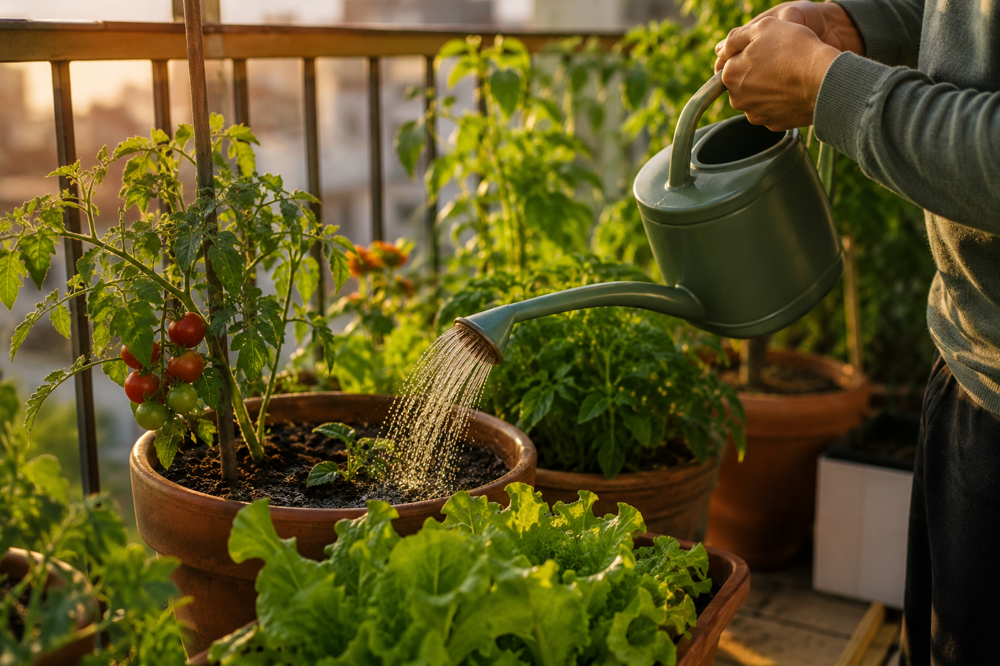

Si cultivas en balcón o terraza, el riego es la causa número uno de plantas muertas, por encima de las plagas o la falta de sol. Y casi siempre el error nace de una idea equivocada: pensar que la maceta funciona igual que el suelo del jardín. No es así, y la diferencia es grande.
El dato que lo cambia todo: 30-50% más agua
Una planta en maceta necesita, en proporción, entre un 30 y un 50% más de agua que la misma planta cultivada directamente en la tierra del jardín. Parece contraintuitivo, pero tiene una explicación física sencilla:
- Menos volumen de tierra: en el suelo, las raíces tienen un depósito casi infinito de humedad alrededor. En una maceta, el agua disponible se limita a unos pocos litros de sustrato.
- Se calienta más rápido: las paredes de la maceta están expuestas al aire y al sol por todos los lados. El sustrato se calienta más que la tierra del jardín, y el calor evapora el agua mucho más deprisa.
- Drena más: una maceta con buen drenaje deja salir el agua sobrante enseguida, mientras que en el suelo el agua se reparte y se queda más tiempo.
El resultado es que una maceta puede pasar de húmeda a seca en cuestión de horas en pleno verano. Una maceta de 15 litros expuesta al sol puede quedarse completamente seca en menos de un día en un día caluroso.
Pero ojo: más agua no significa encharcar
Aquí está la trampa. Que la maceta necesite más agua no significa regar a todas horas "por si acaso". El segundo error más común, y el que más plantas mata, es el contrario: el exceso de riego. Cuando el sustrato está permanentemente empapado, la raíz se queda sin oxígeno y se pudre. La planta se muere por dentro aunque por fuera parezca sana.
La solución no es "más" ni "menos" agua: es precisión. Saber cuántos litros necesita tu planta concreta, en tu maceta concreta, en esta época del año.
Cómo calcular los litros exactos
El método agronómico que usan los profesionales es regar un porcentaje del volumen de la maceta en cada riego, que varía según el tipo de planta:
- Hortalizas de fruto (tomate, pimiento, pepino): las más sedientas, en torno al 15-17% del volumen por riego en verano.
- Hortalizas de hoja y raíz (lechuga, rúcula, zanahoria): consumo medio, alrededor del 7-13%.
- Aromáticas resistentes (romero, tomillo, orégano): muy poco, solo un 3-6%.
Por ejemplo: una maceta de tomate de 20 litros en verano y clima mediterráneo necesita alrededor de 4-5 litros cada vez que riegas. Una de romero de 10 litros, menos de medio litro. La diferencia es enorme, y por eso regar "a ojo" o "lo mismo para todas" es jugar a la lotería con tus plantas.
En lugar de hacer tú los cálculos, nuestra calculadora de riego te da el número exacto: eliges tu planta, tu zona y el tamaño de maceta, y te dice cuántos litros echar y cada cuánto. Es gratis y sin registro.
Para regar con precisión (productos verificados en Amazon):
Medidor de humedad del sustrato: Te dice si la planta necesita agua de verdad, sin adivinar. Ver en Amazon →
Kit de riego por goteo para balcón: Riego constante y preciso, ahorra hasta un 70% de agua. Ver en Amazon →
Programador de riego automático: Riega solo, ideal para vacaciones y olvidadizos. Ver en Amazon →
💧 Truco del dedo: antes de regar, mete el dedo dos centímetros en el sustrato. Si sale seco, riega. Si sale húmedo, espera. Combinado con saber tus litros exactos, no fallarás.
Calcula los litros exactos de tu planta
En vez de regar a ojo, usa estas herramientas gratuitas que te dan los números exactos según tu maceta, tu zona y la época del año:
← Volver a Consejos | Te puede interesar: Riego por goteo en balcón · Cómo regar las plantas en vacaciones